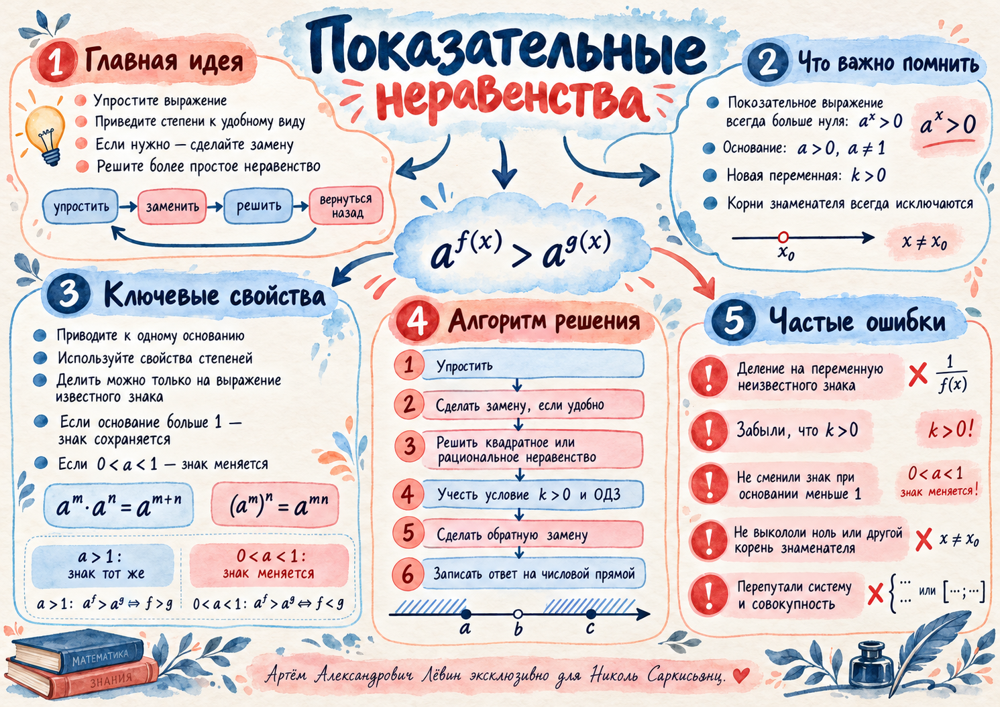

ЕГЭ · профильная математика / урок 26 октября
Показательные
неравенства
От сложного показателя степени — к квадратному неравенству. Две замены, деление только на положительное выражение, метод интервалов и аккуратное возвращение к исходной переменной.
Лёвин Артём Александрович · эксклюзивно для Николь Саркисьянц
Опорный переход
75k2 − 152k + 45 > 0
k = (5/3)t > 0
Сначала найдите подходящие значения k, затем дважды выполните обратную замену.
Скачать пособиеКогда знак сохраняется?
Здесь решают два свойства: монотонность показательной функции и постоянный знак выражения, на которое делят неравенство.
a > 1: af(x) > ag(x) ⇔ f(x) > g(x)
Функция возрастает, знак сравнения показателей сохраняется.0 < a < 1: af(x) > ag(x) ⇔ f(x) < g(x)
Функция убывает, знак сравнения показателей меняется.at > 0 при a > 0
Можно разделить на (3t)2. При замене k = (5/3)t обязательно k > 0.Полезные преобразования
25t = (5t)2
15t = 3t · 5t
32+2t = 9(3t)2
Нельзя умножать или делить неравенство на x, пока неизвестен его знак. Если x отрицателен, знак меняется; если x равен нулю, деление невозможно.
Главный пример: две замены
Последовательно упрощаем степени, вводим квадратное неравенство, возвращаемся к t и x.
Условие
3 · 251−3/x − 152 · 15−3/x + 5 · 32−6/x > 0
Область допустимых значений: x ≠ 0.
t = −3/x, x ≠ 0
Получаем выражение со степенями 251+t, 15t и 32+2t.
75(5t)2 − 152 · 3t5t + 45(3t)2 > 0
75(5/3)2t − 152(5/3)t + 45 > 0
Положительность (3t)2 гарантирует сохранение знака.
k = (5/3)t > 0
75k2 − 152k + 45 > 0
Дискриминант 9604, его корень 98. Корни квадратного трёхчлена: 9/25 и 5/3.
0 < k < 9/25 или k > 5/3
t < −2 или t > 1
−3/x < −2 или −3/x > 1
(2x−3)/x < 0 или (−x−3)/x > 0
Ответ: x ∈ (−3; 0) ∪ (0; 3/2).
Проверьте знак сами
Передвигайте показатель t. Новая переменная k, значение квадратного трёхчлена и его знак пересчитываются одновременно. На шкале отмечены оба корня.
Шкала k от 0 до 8
Знаки участков показаны на шкале; точки корней в строгом неравенстве исключаются.
k = (5/3)t
75k² − 152k + 45
От квадратного — к рациональному
В конце решения могут появиться дроби с неизвестной переменной в знаменателе. Их удобно решать методом интервалов.
Второй показательный пример
2 · 12x + 9x > 3 · 16x
Делим на 9x > 0 и вводим k = (4/3)x > 0.
2k + 1 > 3k²
(3k + 1)(k − 1) < 0
Получаем 0 < k < 1 и, поскольку 4/3 > 1, x < 0.
Отрицательный дискриминант
У выражения 4k² − 5k + 4 дискриминант равен −39. Корней нет, старший коэффициент положителен, следовательно трёхчлен положителен для всех действительных k.
Рациональная дробь
(x+1)/(3x+5) ≥ 4
Сначала исключаем x = −5/3. Приводим всё к общей дроби:
(−11x−19)/(3x+5) ≥ 0
Нуль числителя −19/11 включаем, нуль знаменателя −5/3 исключаем.
Ответ: x ∈ [−19/11; −5/3).
Система означает пересечение условий, совокупность — объединение. Эти операции дают разные множества решений.
10 заданий на закрепление
Решите неравенства без подсказок. Сложность растёт от сравнения показателей до двух замен и рациональных дробей.
- 3x+1 > 81
- (1/4)2x−1 ≤ 16
- 4x − 5·2x + 4 < 0
- 9x − 4·3x + 3 ≥ 0
- 4·9x − 5·6x + 4·4x > 0
- 3·4x − 5·6x + 2·9x < 0
- 9·16x − 25·12x + 16·9x < 0
- (x+2)/(2x+3) > 2
- (2x+1)/(x−4) ≥ 3
- 15·25−1/x − 34·15−1/x + 15·9−1/x > 0
Показать точные ответы к показательным неравенствам
1. x > 3
2. x ≥ −1/2
3. 0 < x < 2
4. x ≤ 0 или x ≥ 1
5. x ∈ ℝ
6. 0 < x < 1
7. 0 < x < 2
8. −3/2 < x < −4/3
9. 4 < x ≤ 13
10. −1 < x < 0 или 0 < x < 1
Проверка ключевого правила
Можно ли разделить неравенство на (3t)2 без изменения знака?
Сложные углы в радианах
Отдельный сборник из 10 заданий по тригонометрии: углы приведения, отрицательные аргументы, периодичность и формулы суммы и разности. Упражнения добавлены для самостоятельной тренировки.
- sin(5π/6)
- cos(4π/3)
- tg(7π/4)
- ctg(5π/3)
- sin(−7π/4)
- cos(17π/6)
- tg(−23π/6)
- ctg(35π/4)
- sin(49π/12)
- tg(−89π/12)
Показать ответы по тригонометрии
1. 1/2
2. −1/2
3. −1
4. −√3/3
5. √2/2
6. −√3/2
7. √3/3
8. −1
9. (√6−√2)/4
10. −2−√3
Материалы и самопроверка
Проверьте, что можете повторить разобранный маршрут без опоры на образец.
Памятка по теме
На акварельной карте собраны правила изменения знака, свойства степеней, обратная замена и типичные ошибки.


Что Вы теперь умеете?
Отмечено 0 из 6 навыков